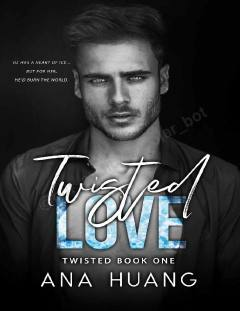

TLMurakkab va ehtirosli sevgi munosabatlari haqidagi zamonaviy romantik roman.
Twisted Love - bu Ana Huang tomonidan yozilgan zamonaviy romantik roman bo'lib, u murakkab munosabatlar va his-tuyg'ular haqida hikoya qiladi. Kitob qahramonlarning o'tmishi va ular o'rtasidagi kutilmagan bog'liqlikni ochib beradi. Asar o'quvchilarni sevgi va ehtirosga to'la voqealar rivoji bilan o'ziga jalb qiladi.